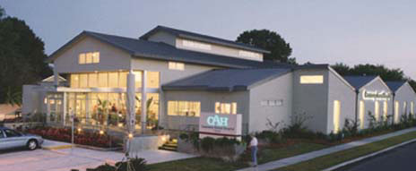

A 36-year tradition of excellence in facility design, is your chance to showcase your success and inspire other veterinarians to reach for the stars. If your hospital is chosen by our expert panel of judges to be a model for other practitioners, we'll feature your facility and its success secrets in an issue of Veterinary Economics. |
||
 2000 Hospital of the Year - Causeway Animal Hospital in Metairie, La |
||
Now's your chance to show other veterinarians your exceptional facility. You're eligible improvements to,or renovated your veterinary hospital after Jan. 1, 1996. We welcome entries worldwidefrom all practice types. An independent panel of judges will choose up to 12 winning entries. The 2001 Hospital of the Year winner will be featured in the March 2001 issue of Veterinary Economics and receive two complimentary registrations to the Central Veterinary Conference and Hospital Design Conference in Kansas City, Mo., Aug. 24-28. For an entry form and complete contest rules, download the Adobe Acrobat form or e-mail ve@vetmedpub.com; call (800) 255-6864, ext. 146; fax (913) 492-4157; or write to: Hospital Design Competition, 15333 W. 95th St., Lenexa, KS 66219-9915. The entry form must be completed and postmarked by Dec. 1, 2000. We look forward to seeing your new hospital! |
||